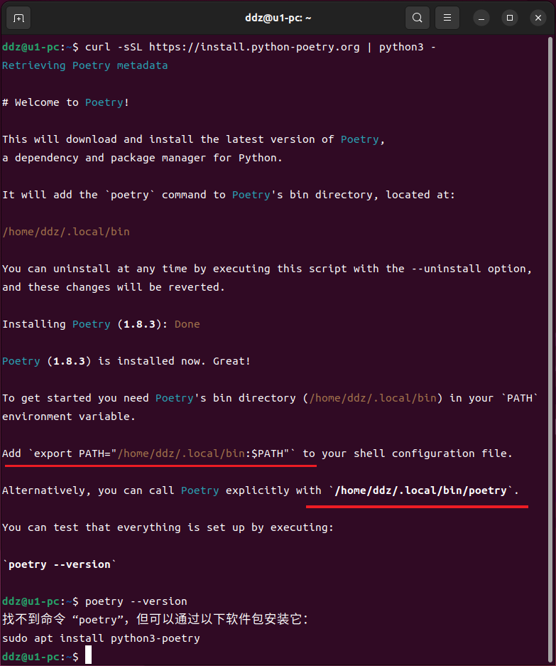
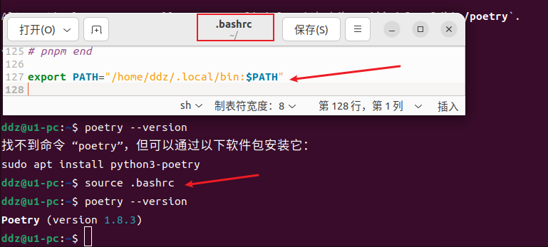
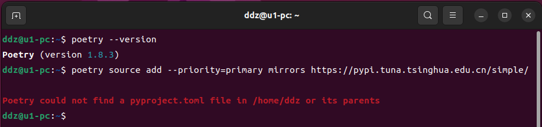
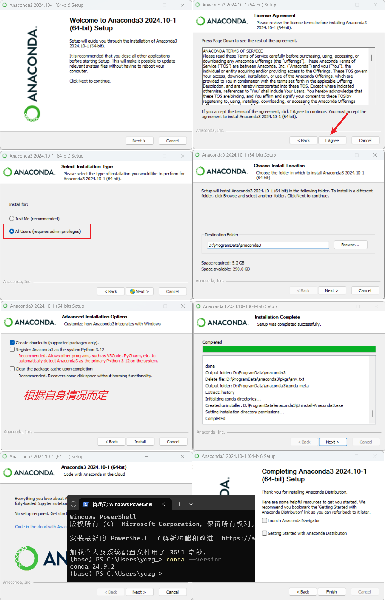

开始搞项目之前先把他需要的一些常见的环境都弄好，例如：python、pip、venv、Poetry 等
这里说一下在不同的操作系统下如何安装
# 检查版本
python3 -V
# 检查 pip 版本：pip -V
sudo apt install python3-pip
参考地址： pypi | 镜像站使用帮助 | 清华大学开源软件镜像站 | Tsinghua Open Source Mirror
# 临时使用清华镜像来升级 pip
python3 -m pip install -i https://pypi.tuna.tsinghua.edu.cn/simple --upgrade pip
# 全局设置
pip config set global.index-url https://pypi.tuna.tsinghua.edu.cn/simple
他和
sudo apt install python3-venv
# 创建
python3 -m venv venv
# 激活
source ./venv/bin/activate
# 退出虚拟环境
deactivate
# 安装依赖（添加到这里，使用的时候方便一些）
pip install -r requirements.txt
# 你可以创建多个虚拟环境
python3 -m venv venv1
source ./venv1/bin/activate
python3 -m venv venv2
source ./venv2/bin/activate
# 创建虚拟环境
python -m venv venv
# 激活虚拟环境
.\venv\scripts\activate
# 退出虚拟环境
deactivate
# 安装依赖（添加到这里，使用的时候方便一些）
pip install -r requirements.txt
# 你可以创建多个虚拟环境
python -m venv venv1
.\venv1\scripts\activate
python -m venv venv2
.\venv2\scripts\activate
官网介绍他有好几种安装方式：pipx、the official installer……
这里选用的安装方式是：the official installer
curl -sSL https://install.python-poetry.org | python3 -
# 检查版本（安装完成之后立即检查版本是不行的，你还有一步没做）
poetry --version

有点不智能啊，还得自己搞……
# 更新 /home/ddz/.bashrc 文件
export PATH="/home/ddz/.local/bin:$PATH"
刷新 .bashrc 文件：

参考地址： pypi | 镜像站使用帮助 | 清华大学开源软件镜像站 | Tsinghua Open Source Mirror
poetry source add --priority=primary mirrors https://pypi.tuna.tsinghua.edu.cn/simple/

开始以为会像
那么有没有一种方式可以设置全局镜像？？？
本来
下载地址（Anaconda 和 Miniconda 都在这里）：Download | Anaconda
下面是在 win11 上的安装截图

注意：看上去安装挺简单的，又在自己的电脑（ win10 ）上安装了一次，安装完成之后检查版本时
# Anaconda 和 Miniconda 都安装了一下，最后保留了 Miniconda
# 添加到环境变量（下面几个都添加过去了）
# 注意：使用你自己的安装路径
D:\ProgramData\miniconda3
D:\ProgramData\miniconda3\Library\bin
D:\ProgramData\miniconda3\Scripts
D:\ProgramData\miniconda3\condabin
下面是一些常用的命令：
# 创建虚拟环境
# 1、使用 environment.yml 文件（没有测试过）
conda env create -f environment.yml
# 2、使用命令行创建
conda create --name 环境名称 python=3.11
# --name 简写方式
conda create -n 环境名称 python=3.11
# 虚拟环境列表（可以看到你创建的虚拟环境）
conda env list
conda info --envs
# 激活虚拟环境
conda activate 环境名称
# 退出当前虚拟环境
conda deactivate
# 删除虚拟环境
conda remove -n 环境名称 --all
__pycache__ 目录是Python解释器在运行Python代码时自动创建的，它包含了编译后的Python文件的字节码（bytecode）。这个目录的目的是为了提高程序的启动速度和运行效率。以下是__pycache__目录的一些具体用途和特点：
总的来说，__pycache__目录是Python为了提高性能和效率而自动管理的一部分，它使得程序的加载和执行更加迅速，同时保持了跨平台的一致性。
如何删除所有的 __pycache__ 目录？你可以创建一个 py 文件，这里命名为
import os
import shutil
for root, dirs, files in os.walk("."):
for dir in dirs:
if dir == "__pycache__":
shutil.rmtree(os.path.join(root, dir))